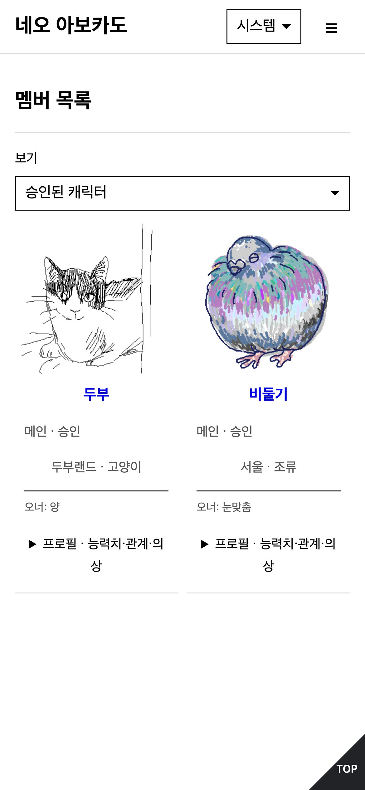
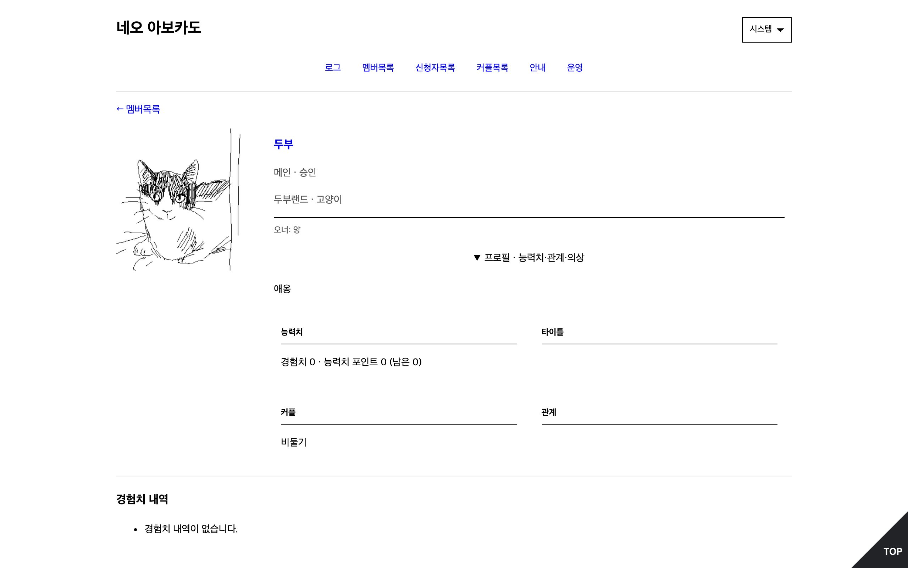
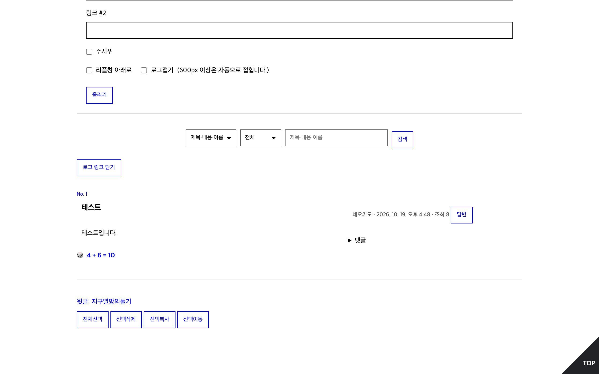

아보카도 에디션을 나루에서
자캐 커뮤니티를 내 나루 주소에서 여세요
네오 아보카도는 그누보드 기반의 아보카도 에디션을 나루로 옮긴 자캐 커뮤니티 템플릿이에요. PHP 호스팅 없이 내주소.naru.pub에서 캐릭터 신청부터 로그, 상점까지 그대로 운영할 수 있어요.


둘러보기



화면은 실제로 운영하던 네오 아보카도를 손님으로 본 모습이에요.
네오 아보카도로 할 수 있는 것
-
캐릭터 신청과 승인
추가 항목을 둔 캐릭터 신청서, 메인·서브·NPC, 운영진 승인까지. 관계와 커플, 의상, 타이틀도 붙여요.
-
로그 게시판
그림 로그와 댓글, 주사위, 호출, 비밀글, 로그 번호와 해시태그. 손님도 이름과 비밀번호로 글을 쓸 수 있어요.
-
탐색과 조합
글 안에서 탐색하고, 아이템을 쓰고, 레시피로 조합해요.
-
능력치와 경험치
능력치 배분과 회복, 경험치와 랭킹을 운영진이 관리해요.
-
상점과 인벤토리
화폐, 출석, 뽑기, 판매와 선물. 화폐와 소속, 종족의 이름은 커뮤니티에 맞게 바꿔요.
-
쪽지와 알림
쪽지와 호출, 댓글 알림이 실시간으로 오고, 나루 앱(iOS, Android, macOS)으로도 받아요.
-
운영 화면
원본처럼 환경설정·회원·게시판·캐릭터·아이템·기타 관리로 묶인 운영 화면에서 커뮤니티를 꾸리고 꾸며요.
-
공유하기 좋은 주소
페이지마다 주소가 있어 링크를 나눌 수 있고, 링크 미리보기와 게시판 RSS도 나와요.
설치하기
-
나루에 가입해요
naru.pub에서 원하는 주소를 정하면, 그 주소가 내 사이트가 돼요. 커뮤니티는 내주소.naru.pub에서 열려요.
-
서포터 플랜에 가입해요
네오 아보카도는 나루의 데이터베이스를 써서, 설치하는 사람에게 서포터 플랜이 필요해요. 커뮤니티에 들어오는 회원은 서포터가 아니어도 돼요.
-
템플릿을 사이트 맨 위에 설치해요
나루 게시판의 네오 아보카도 템플릿에서 내 사이트에 적용을 누르고, 적용할 곳을 사이트 맨 위(/)로 골라요. 서버 코드가 든
_naru/폴더는 맨 위에 있어야 동작해요.사이트에 원래 있던 파일 중 겹치는 것은
/.backup/에 보관돼요. -
운영자로 로그인해요
내주소.naru.pub/admin/에서 운영자 로그인을 눌러요. 커뮤니티 설정 한 화면에 사이트 전체 설정이 있어요.
-
가입 방식을 정해요
나루의 데이터베이스 → 사이트 회원에서 누구나 가입, 운영자 승인 후 이용, 신규 가입 중단 중 하나를 고르고, 필요하면 이메일을 인증한 계정이나 서포터만 받도록 해요.
-
게시판부터 만들어요
원본처럼 처음에는 게시판이 없어요. 로그를 올릴 게시판을 만들고, 등급과 캐릭터 추가 항목, 디자인과 메뉴, 안내 페이지를 꾸며요.
-
업데이트해요
새 버전은 설치한 템플릿 에서 업데이트해요. 커뮤니티의 글과 회원은 그대로고, 직접 고친 파일은 보관한 뒤 바꿔요.
자주 묻는 질문
- 아보카도 에디션과 무엇이 같고 다른가요?
- 커뮤니티가 하는 일은 대부분 옮겼어요. 옮긴 것과 옮기지 않은 것, 일부러 다르게 한 것은 이식 문서에 정리해 두었어요.
- 회원도 서포터 플랜이 필요한가요?
- 아니요. 설치하는 사람만 필요해요. 회원은 나루 계정만 있으면 되고, 운영자가 원하면 서포터만 받도록 바꿀 수 있어요.
- 얼마나 담을 수 있나요?
- 사이트마다 그림 같은 미디어는 250 MiB, 파일 10,000개까지, 글과 캐릭터 같은 데이터는 100 MiB까지예요. 그림 로그가 많은 커뮤니티는 미디어 용량을 먼저 살펴 주세요.
- 데이터는 어떻게 보관되나요?
- 업데이트가 데이터베이스를 바꾸기 전에 나루가 복원 지점을 남겨요. 나루 제어판의 데이터베이스 → 복원 지점에서 내려받거나 되돌릴 수 있어요.
- 소스를 볼 수 있나요?
- 네오 아보카도는 GPL-3.0 오픈 소스예요. naru-pub/neo-avocado에서 볼 수 있어요.
- 문의는 어디로 하나요?
- @naru_pub으로 주세요.